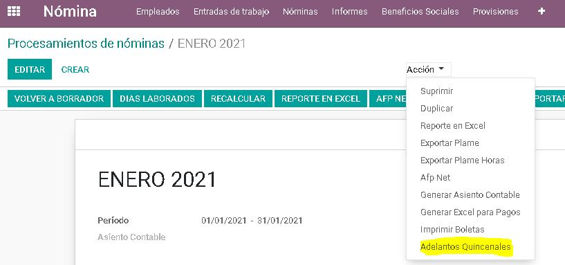
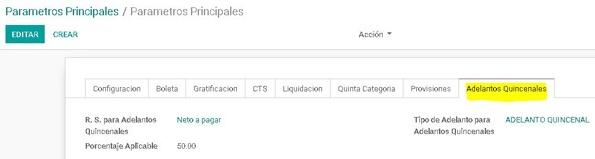
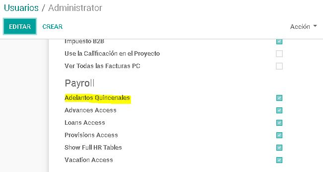
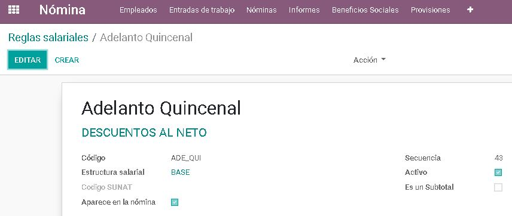
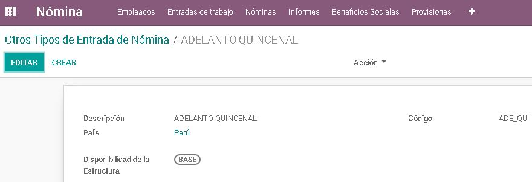

Adelantos Quincenales
Agregando action a Lote de Nomina.

Agregando pagina de Parametros Principales.
Campo R.S. para Adelantos Quincenales utilizado para el calculo del monto de la Quincena.
Campo Porcentaje Aplicable utilizado para el calculo del monto de la quincena.
Campo R.S. para Tipo de Adelanto para Adelantos Quincenales utilizado para generar los Adelantos Quincenales con ese tipo de Adelanto.

Agregando grupo de Adelantos Quincenales, necesario para la generacion de los adelantos.

Data Generada
En la instalacion del modulo se genera la regla salarial Adelanto Quincenal y el input Adelanto Quincenal.

